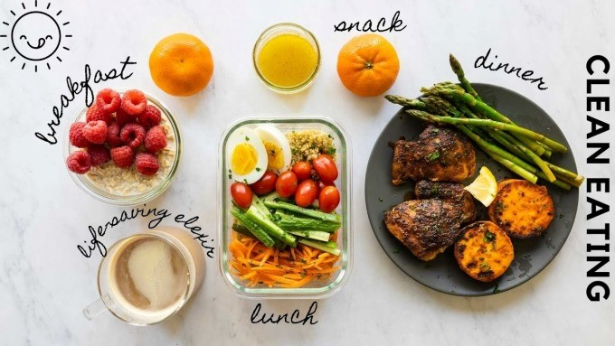
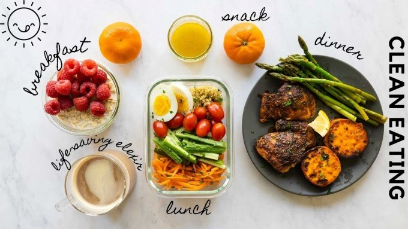

1. Ăn nhiều hơn mà không sợ tăng cân
Một trong các nguyên tắc cốt lõi của phương pháp eat clean là: Ăn thực phẩm toàn phần, chủ yếu thực vật. Nguyên tắc này tuyệt vời lắm các bạn ạ! Chế độ ăn toàn phần chủ yếu là thực vật đã được chứng minh hiệu quả đáng kinh ngạc trong việc kiểm soát cân nặng và phòng tránh các loại bệnh tim mạch, ung thư, béo phì, tiểu đường… Thực phẩm toàn phần (whole food) giữ lại được nhiều chất xơ, giúp ta no lâu hơn. Thực phẩm từ thực vật lại chứa nhiều chất chống oxy hóa, vitamin và cực ít calo, giảm cảm giác thèm ăn đáng kể. Vì vậy, chỉ cần áp dụng chính xác nguyên tắc này là bạn có thể giảm cân không cần tính calo luôn! Điều này đã được Tiến sĩ T. Colin Campbell chứng minh qua rất nhiều thí nghiệm sức khỏe và dinh dưỡng trong nhiều chục năm. Bạn có thể tìm hiểu thêm trong cuốn “The China Study: Bí mật dinh dưỡng cho sức khỏe toàn diện”.
 

2. Tiết kiệm thời gian nấu nướng
Chẳng phải ngẫu nhiên mà eat clean được ví là cách nấu nướng dành cho người lười :)) Bạn chẳng cần phải nấu ăn ngon cũng có thể làm được vô số món, ví dụ như: ức gà áp chảo, rau củ luộc, khoai luộc, cá hấp, cháo yến mạch… Chú trọng vào sự đơn giản, eat clean không những giữ được phần lớn dinh dưỡng trong món ăn mà còn tiết kiệm thời gian nấu nướng cực nhiều! Một số món eat clean Huyền hay làm lúc lười gồm: cháo yến mạch rau củ, bún lứt ức gà, trứng tráng rau củ, cơm rang thập cẩm.
3. Tiết kiệm tiền
Chắc bạn đang suy nghĩ: Eat clean ăn toàn đồ đắt tiền như ức gà, cá hồi, hạt này hạt nọ thì lấy đâu ra mà tiết kiệm tiền? Thật ra, thực phẩm eat clean rất phong phú chứ không gói gọn trong mấy loại kể trên đâu. Ở Việt Nam mình có rất nhiều superfoods tuyệt vời mà giá lại rẻ bèo. Ví dụ như: khoai lang, đậu đỗ, rau xanh, hoa quả mọng, …vân vân mây mây. Chúng mình có thể sử dụng thay thế các loại thực phẩm mà không có sẵn. Eat clean cũng hạn chế chi tiền đi ăn ngoài, vì bạn sẽ rất khó tìm được quán eat clean ưng ý. Có tìm được thì giá cũng không hề rẻ. Vậy nên, nấu ăn ở nhà là thượng sách! Còn nữa, eat clean không những giảm cân mà còn tăng cường đề kháng cho chúng mình. Kể từ khi theo eat clean và tập luyện đều đặn, Huyền ít khi ốm vặt lắm. Tính sơ sơ cũng tiết kiệm ít nhất 1 triệu tiền thuốc men cả năm rồi!
4. Chăm tập thể dục hơn
Điều này chuẩn luôn bạn ơi! Cuốn “Bí mật dinh dưỡng cho sức khỏe toàn diện” có nêu một báo cáo mối quan hệ giữa dinh dưỡng và mức độ tập luyện thể dục thể thao. Trong đó, những con chuột thí nghiệm ăn ít thịt động vật và nhiều thực vật toàn phần hơn có xu hướng chăm tập luyện hơn những con ăn nhiều thịt động vật và ít thực phẩm toàn phần gốc thực vật. Huyền cũng để ý rằng, những lúc lỡ ăn uống vô tội vạ, mình thường không muốn nhấc tay động chân vào việc gì. Còn những hôm ăn eat clean thì hừng hực khí thế tập luyện, chạy nhảy 1 tiếng cũng oke luôn!
5. Cải thiện tâm trạng rất tốt
Eat clean giúp tâm trạng mình vui vẻ, hạnh phúc hơn nhiều. Đặc biệt là khi mình ăn trong chánh niệm, hoàn toàn tập trung thưởng thức hương vị món ăn. Trước đây có nhiều lúc buồn bực Huyền hay ăn vặt lung tung với hi vọng giải tỏa. Nhưng giải tỏa thì chẳng thấy đâu, chỉ thấy ngán, người ì ạch, không làm được việc rồi lại bực mình hơn. Còn bạn, bạn có giống Huyền không?
6. Bảo vệ môi trường
Có thể bạn eat clean chỉ vì muốn giảm cân, nhưng không thể phủ nhận chế độ ăn này cũng góp phần bảo vệ môi trường. Ăn nhiều rau củ sẽ giúp giảm bớt tài nguyên sử dụng cho chăn nuôi gia súc gia cầm, giảm bớt khí thải độc hại. Sử dụng thực phẩm tươi ở địa phương giúp giảm thiểu nhiên liệu sử dụng để vận chuyển phân phối. Còn gì tuyệt hơn việc vừa khỏe, vừa đẹp, vừa là người có trách nhiệm với cộng đồng?
Related Post
| NEXT POST |
| Đồ ăn vặt lý tưởng cho công cuộc giảm cân |
.JPG)